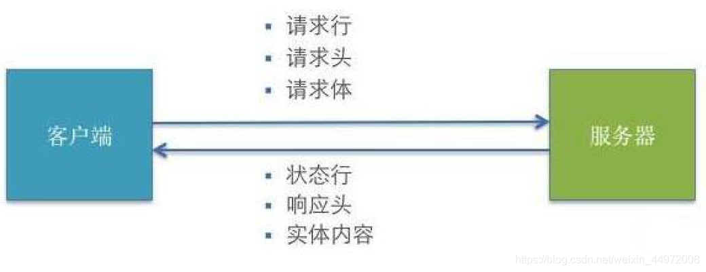
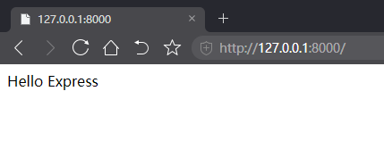
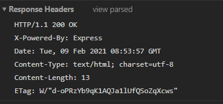
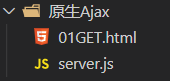
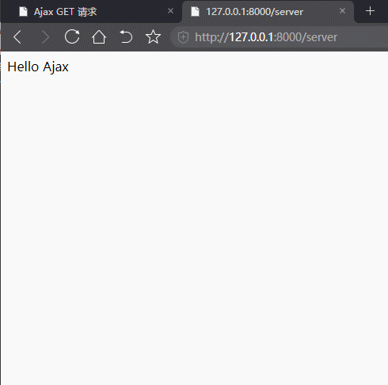
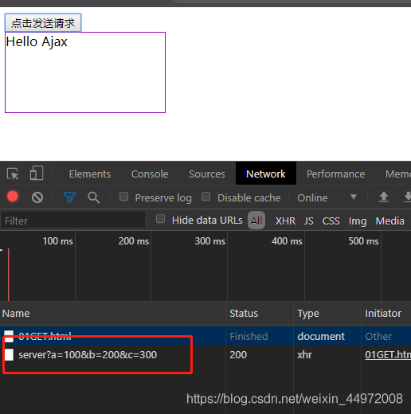

三小时AJAX从入门到精通
AJAX学习的笔记，主要环境为Node.js
建议搭配视频食用：三小时AJAX从入门到精通
第一章： Ajax概述
1.1、Ajax简介
- Ajax全称为Asynchronous Javascript And XML，即异步JS和XML
- 通过Ajax可以在浏览器中向服务器发送异步请求，最大的优势：无刷新获取数据
- AJAX不是新的编程语言，而是一种将现有的标准组合在一起使用的新方式
1.2 、XML简介
-
XML：可扩展标记语言
-
XML：被设计用来传输和存储数据
-
XML和HTML类似，不同点：HTML中都是预定义标签，XML中没有预定义标签，全是自定义标签，用来表示一些数据.比如说我有一个学生数据：name = “孙悟空” ; age = 18 ; gender = “男” ;用XML 表示：
<student> <name>孙悟空</name> <age>18</age> <gender>男</gender> </student> -
现在已被JSON取代
{"name":"孙悟空","age":18,"gender":"男"}
1.3、 AJAX 的特点
1.3.1、AJAX的优点
- 可以无刷新页面与服务端进行通信
- 允许你根据用户事件来更新部分页面内容
1.3.2、AJAX 的缺点
- 没有浏览历史，不能回退
- 存在跨域问题（同源）
- SEO不友好（爬虫获取不到信息）
第二章 jQuery中的AJAX
2.1、MDN文档
https://developer.mozilla.org/zh-CN/docs/Web/HTTP/Overview
2.2、HTTP 请求交互的基本过程

- 前后应用从浏览器端向服务器发送HTTP 请求(请求报文)
- 后台服务器接收到请求后, 调度服务器应用处理请求, 向浏览器端返回HTTP响应(响应报文)
- 浏览器端接收到响应, 解析显示响应体/调用监视回调
2.3、HTTP请求报文
2.3.1、请求行
method url
GET /product_detail?id=2
POST /login
2.3.2、多个请求头
Host: www.baidu.com
Cookie: BAIDUID=AD3B0FA706E; BIDUPSID=AD3B0FA706;
Content-Type: application/x-www-form-urlencoded 或者application/json
2.3.3、请求体
username=tom&pwd=123
{"username": "tom", "pwd": 123}
2.4、HTTP 响应报文
-
响应状态行:
status statusText -
多个响应头
- Content-Type: text/html;charset=utf-8 - Set-Cookie: BD_CK_SAM=1;path=/ -
响应体
html 文本/json 文本/js/css/图片...
2.5、post 请求体参数格式
-
Content-Type: application/x-www-form-urlencoded;charset=utf-8用于键值对参数，参数的键值用=连接, 参数之间用&连接
例如: name=%E5%B0%8F%E6%98%8E&age=12
-
Content-Type: application/json;charset=utf-8用于 json 字符串参数
例如: {“name”: “%E5%B0%8F%E6%98%8E”, “age”: 12}
-
Content-Type: multipart/form-data用于文件上传请求
2.6、常见的响应状态码
200 OK ：请求成功。一般用于GET 与POST 请求
201 Created ：已创建。成功请求并创建了新的资源
401 Unauthorized ：未授权/请求要求用户的身份认证
404 Not Found ：服务器无法根据客户端的请求找到资源
500 Internal Server Error ：服务器内部错误，无法完成请求
2.7、不同类型的请求及其作用
GET: 从服务器端读取数据（查）
POST: 向服务器端添加新数据 （增）
PUT: 更新服务器端已经数据 （改）
DELETE: 删除服务器端数据 （删）
2.8、API 的分类
-
REST API: restful （Representational State Transfer (资源)表现层状态转化）
(1) 发送请求进行CRUD 哪个操作由请求方式来决定
(2) 同一个请求路径可以进行多个操作
(3) 请求方式会用到GET/POST/PUT/DELETE
-
非REST API: restless
(1) 请求方式不决定请求的CRUD 操作
(2) 一个请求路径只对应一个操作
(3) 一般只有GET/POST
2.9、区别 一般http请求 与 ajax请求
-
ajax请求 是一种特别的 http请求
-
对服务器端来说, 没有任何区别, 区别在浏览器端
-
浏览器端发请求: 只有XHR 或fetch 发出的才是ajax 请求, 其它所有的都是非ajax 请求
-
浏览器端接收到响应
(1) 一般请求: 浏览器一般会直接显示响应体数据, 也就是我们常说的刷新/跳转页面
(2) ajax请求: 浏览器不会对界面进行任何更新操作, 只是调用监视的回调函数并传入响应相关数据
第三章 原生AJAX 的基本使用 XHR
3.0 、准备工作
3.0.1、安装node.js
3.0.2、安装express（服务端框架）
- 初始化环境
npm init --yes
- 下载express包
npm install express --save
- 编写js代码
// 1. 引入express
const express = require('express');
// 2. 创建应用对象
const app = express();
// 3. 创建路由规则
// request 是对请求报文的封装
// response 是对响应报文的封装
app.get('/', (request, response) => {
// 设置响应
response.send("Hello Express");
});
// 4. 监听端口，启动服务
app.listen(8000, () => {
console.log("服务已经启动, 8000 端口监听中...");
})
- 运行js程序
node express.js
- 打开网页显示页面

- 调试程序可以查看请求和响应

3.0.3、安装nodemon自动重启工具
文件内容有修改自动重新启动服务:https://www.npmjs.com/package/nodemon
- 安装:
npm install -g nodemon
- 启动服务:
ndoemon server.js
3.1、 理解
- 使用
XMLHttpRequest(XHR)对象可以与服务器交互, 也就是发送ajax 请求 - 前端可以获取到数据，而无需让整个的页面刷新。
- 这使得Web 页面可以只更新页面的局部，而不影响用户的操作。
3.2 、核心对象使用步骤
3.2.1、创建XMLHttpRequest 对象
var xhr = new XMLHttpRequest();
3.2.2、设置请求信息（请求方法和url）
// 请求方式
xhr.open(method, url);
//可以设置请求头，一般不设置
xhr.setRequestHeader('Content-Type', 'application/x-www-form-urlencoded');
3.2.3、发送请求
xhr.send(body) //get请求不传 body 参数，只有post请求使用
3.2.4、接收响应（事件绑定，处理服务端返回的结果）
//xhr.responseXML 接收 xml格式 的响应数据
//xhr.responseText 接收 文本格式 的响应数据
xhr.onreadystatechange = function (){
// readyState 是 xhr对象中的属性, 表示状态 0 1 2 3 4
if(xhr.readyState == 4 && xhr.status == 200){
var text = xhr.responseText;
console.log(text);
}
}
3.3 、使用案例
3.3.1、GET 请求
创建两个文件，浏览器端使用的html文件和服务器端使用的js文件

服务器端 server.js
// 1. 引入express
const express = require('express');
// 2. 创建应用对象
const app = express();
// 3. 创建路由规则
app.get('/server', (request, response) => {
// 设置响应头 设置允许跨域
response.setHeader('Access-Control-Allow-Origin', '*');
// 设置响应体
response.send("Hello Ajax");
});
// 4. 监听服务
app.listen(8000, () => {
console.log("服务已经启动, 8000 端口监听中...");
})
启动服务
node server.js
前端页面 html
<!DOCTYPE html>
<html lang="en">
<head>
<meta charset="UTF-8">
<meta http-equiv="X-UA-Compatible" content="IE=edge">
<meta name="viewport" content="width=device-width, initial-scale=1.0">
<title>Ajax GET 请求</title>
<style>
#result {
width: 200px;
height: 100px;
border: solid 1px #90b;
}
</style>
</head>
<body>
<button>点击发送请求</button>
<div id="result"></div>
<script>
//获取button元素
const btn = document.getElementsByTagName('button')[0];
const result = document.getElementById('result');
//绑定事件
btn.onclick = function(){
// 1. 创建对象
const xhr = new XMLHttpRequest();
// 2. 初始化 设置请求方法和url
xhr.open('GET', 'http://127.0.0.1:8000/server')
// 3. 发送
xhr.send();
// 4. 事件绑定 处理服务端返回的结果
xhr.onreadystatechange = function(){
// readyState 是 xhr 对象中的属性, 表示状态 0 1 2 3 4
//判断 (服务端返回了所有的结果)
if(xhr.readyState === 4){
//判断响应状态码 200 404 403 401 500
if(xhr.status >= 200 && xhr.status < 300){
// 处理结果 行 头 空行 体
// 响应
console.log('状态码', xhr.status); // 状态码
console.log('状态字符串', xhr.statusText); // 状态字符串
console.log('所有响应头', xhr.getAllResponseHeaders()); // 所有响应头
console.log('响应体', xhr.response); // 响应体
//设置 result 的文本
result.innerHTML=xhr.response;
}else{
}
}
}
}
</script>
</body>
</html>

设置url参数
xhr.open('GET', 'http://127.0.0.1:8000/server?a=100&b=200&c=300');

3.3.2、POST请求
鼠标放到div中，发post请求，将响应体放在div中呈现
server.js添加post
app.post('/server', (request, response) => {
// 设置响应头, 设置允许跨域
response.setHeader('Access-Control-Allow-Origin', '*');
// 设置响应体
response.send("Hello Ajax POST");
});
post.html
<!DOCTYPE html>
<html lang="en">
<head>
<meta charset="UTF-8">
<meta http-equiv="X-UA-Compatible" content="IE=edge">
<meta name="viewport" content="width=device-width, initial-scale=1.0">
<title>Ajax POST 请求</title>
<style>
#result {
width: 200px;
height: 100px;
border: solid 1px #903;
}
</style>
</head>
<body>
<div id="result"></div>
<script>
// 获取元素对象
const result = document.getElementById('result');
// 绑定事件
result.addEventListener("mouseover", function(){
// 1. 创建对象
const xhr = new XMLHttpRequest();
// 2. 初始化 设置类型（请求方式）与url
xhr.open('POST', 'http://127.0.0.1:8000/server');
// 3. 发送 设置请求参数（请求体）
xhr.send('a=100&b=200&c=300');
// 4. 事件绑定
xhr.onreadystatechange = function(){
// 判断
if(xhr.readyState === 4){
if(xhr.status >=200 && xhr.status < 300){
// 处理服务端返回的结果
result.innerHTML = xhr.response;
}
}
}
});
</script>
</body>
</html>
// 设置请求体内容的类型
xhr.setRequesHeader('Content-Type','application/x-www-from-urlencoded');
// 自定义头信息
xhr.setRequesHeader('name', 'ykyk');
server.js中设置响应头允许自定义请求头 post改成all
response.setHeader('Access-Control-Allow-Header','*');
3.4 、json数据请求
app.all('/json-server', (request, response) => {
// 设置响应头, 设置允许跨域
response.setHeader('Access-Control-Allow-Origin', '*');
// 设置响应头, 设置允许自定义头信息
response.setHeader('Access-Control-Allow-Headers', '*');
// 响应一个数据
const data = {
name: 'atguigu'
};
// 对 对象 进行 字符串 转换
let str = JSON.stringify(data)
// 设置响应体
response.send(str);
});
<!DOCTYPE html>
<html lang="en">
<head>
<meta charset="UTF-8">
<meta http-equiv="X-UA-Compatible" content="IE=edge">
<meta name="viewport" content="width=device-width, initial-scale=1.0">
<title>JSON</title>
<style>
#result {
width: 200px;
height: 100px;
border: solid 1px #89b;
}
</style>
</head>
<body>
<div id="result"></div>
<script>
const result = document.getElementById('result');
// 绑定键盘按下事件
window.onkeydown = function(){
// 发送请求
const xhr = new XMLHttpRequest();
// *2*.(自动转换) 设置响应体数据的类型(自动转换)
xhr.responseType = 'json';
// 初始化
xhr.open('GET', 'http://127.0.0.1:8000/json-server');
// 发送
xhr.send();
// 事件绑定
xhr.onreadystatechange = function(){
if(xhr.readyState === 4){
if(xhr.status >= 200 && xhr.status < 300){
console.log(xhr.response);
// 1. 手动对数据转化 (字符串再转换成json)
// let data = JSON.parse(xhr.response); //转换成json
// result.innerHTML = data.name;
// *2*. (自动转换)自动转换(自动转换)
result.innerHTML = xhr.response.name; //已经自动变成json
}
}
}
}
</script>
</body>
</html>
3.5 、请求超时与网络异常
// 超时设置 （2秒）
xhr.timeout = 2000;
// 超时回调
xhr.ontimeout = function(){
alert('网络超时，请稍后重试')
}
// 网络异常回调
xhr.onerror = function(){
alert('网络异常，请稍后重试')
}
3.6 、取消请求
// 手动取消
xhr.abort()
3.7 、请求重复发送问题
3.8、 解决 IE 缓存问题
问题：在一些浏览器中(IE),由于缓存机制的存在，ajax 只会发送的第一次请求，剩余多次请求不会在发送给浏览器而是直接加载缓存中的数据。解决方式：浏览器的缓存是根据url 地址来记录的，所以我们只需要修改url 地址即可避免缓存问题
xhr.open("get","/testAJAX?t="+Date.now());
3.9 、AJAX 请求状态
xhr.readyState 可以用来查看请求当前的状态
https://developer.mozilla.org/zh-CN/docs/Web/API/XMLHttpRequest/readyState
0: 表示XMLHttpRequest 实例已经生成，但是open()方法还没有被调用1:表示send()方法还没有被调用，仍然可以使用setRequestHeader()，设定HTTP请求的头信息2: 表示send()方法已经执行，并且头信息和状态码已经收到3: 表示正在接收服务器传来的body 部分的数据4: 表示服务器数据已经完全接收，或者本次接收已经失败了
3.10 、API总结
XMLHttpRequest()：创建 XHR 对象的构造函数status：响应状态码值，如 200、404statusText：响应状态文本，如 ’ok‘、‘not found’readyState：标识请求状态的只读属性 0-1-2-3-4onreadystatechange：绑定 readyState 改变的监听responseType：指定响应数据类型，如果是 ‘json’，得到响应后自动解析响应response：响应体数据，类型取决于 responseType 的指定timeout：指定请求超时时间，默认为 0 代表没有限制ontimeout：绑定超时的监听onerror：绑定请求网络错误的监听open()：初始化一个请求，参数为：(method, url[, async])send(data)：发送请求abort()：中断请求 （发出到返回之间）getResponseHeader(name)：获取指定名称的响应头值getAllResponseHeaders()：获取所有响应头组成的字符串setRequestHeader(name, value)：设置请求头
第四章 JQuery中的AJAX
4.1 、get 请求
$.get(url, [data], [callback], [type])
url:请求的URL 地址data:请求携带的参数callback:载入成功时回调函数type:设置返回内容格式，xml, html, script, json, text, _default
4.2 、post 请求
$.post(url, [data], [callback], [type])
url:请求的URL 地址data:请求携带的参数callback:载入成功时回调函数type:设置返回内容格式，xml, html, script, json, text, _default
4.3、通用方法
$.ajax({
// url
url: 'http://127.0.0.1:8000/jquery-server',
// 参数
data: {a:100, b:200},
// 请求类型
type: 'GET',
// 响应体结果
dataType: 'json',
// 成功的回调
success: function(data){console.log(data);},
// 超时时间
timeout: 2000,
// 失败的回调
error: function(){console.log('出错拉~');},
// 头信息
headers: {
c: 300,
d: 400
}
})
第五章 跨域
推荐阅读：
5.1 、同源策略
-
同源策略（Same-Origin Policy）最早由 Netscape 公司提出，是浏览器的一种安全策略。
-
同源：协议、域名、端口号 必须完全相同
-
违背同源策略就是跨域
5.2 、如何解决跨域
5.2.1、JSONP
-
JSONP是什么
JSONP (JSON with Padding)，是一个非官方的跨域解决方案，纯粹凭借程序员的聪明才智开发出来，只支持get请求。
-
JSONP 怎么工作的？
在网页有一些标签天生具有跨域能力，比如：img, link, iframe, script。
JSONP就是利用script标签的跨域能力来发送请求的。
-
JSONP的使用
- 动态的创建一个script标签
var script = document.createElement("script");- 设置script的src，设置回调函数
script.src = "http://localhost:3000/testAJAX?callback=abc"; function abc(data) { alert(data.name); };- 将script 添加到body 中
document.body.appendChild(script);- 服务器中路由的处理
router.get("/testAJAX" , function (req , res) { console.log("收到请求"); var callback = req.query.callback; var obj = { name:"孙悟空", age:18 } res.send(callback+"("+JSON.stringify(obj)+")"); }); -
jQuery 中的JSONP
<!DOCTYPE html> <html lang="en"> <head> <meta charset="UTF-8"> <title>Title</title> </head> <body> <button id="btn">按钮</button> <ul id="list"></ul> <script type="text/javascript" src="./jquery-1.12.3.js"></script> <script type="text/javascript"> window.onload = function () { var btn = document.getElementById('btn') btn.onclick = function () { $.getJSON("http://api.douban.com/v2/movie/in_theaters?callback=?",function(data) { console.log(data); //获取所有的电影的条目 var subjects = data.subjects; //遍历电影条目 for(var i=0 ; i<subjects.length ; i++){ $("#list").append("<li>"+ subjects[i].title+"<br />"+ "<img src=\""+subjects[i].images.large+"\" >"+ "</li>"); } }); } } </script> </body> </html>
5.2.2、CORS
推荐阅读：
- http://www.ruanyifeng.com/blog/2016/04/cors.html
- https://developer.mozilla.org/zh-CN/docs/Web/HTTP/Access_control_CORS
-
CORS是什么？
CORS (Cross-Origin Resource Sharing), 跨域资源共享。CORS 是官方的跨域解决方案，它的特点是不需要在客户端做任何特殊的操作，完全在服务器中进行处理，支持 get 和 post 等请求。跨域资源共享标准新增了一组 HTTP 首部字段（响应头），允许服务器声明哪些源站通过浏览器有权限访问哪些资源
-
CORS怎么工作的？
CORS 是通过设置一个响应头来告诉浏览器，该请求允许跨域，浏览器收到该响应以后就会对响应放行。
-
CORS 的使用
主要是服务端的设置：
router.get("/testAJAX" , function (req , res) { //通过res 来设置响应头，来允许跨域请求 //res.set("Access-Control-Allow-Origin","http://127.0.0.1:3000"); res.set("Access-Control-Allow-Origin","*"); res.send("testAJAX 返回的响应"); });